The original, as published: Tony R. Kuphaldt, Lessons In Electric Circuits, Operational amplifiers. CC BY 4.0, https://creativecommons.org/licenses/by/4.0/. Imported as published, from https://www.ibiblio.org/kuphaldt/electricCircuits/Semi/SEMI_8.html https://www.ibiblio.org/kuphaldt/electricCircuits/Semi/SEMI_8.html
The operational amplifier is arguably the most useful single device in analog electronic circuitry. With only a handful of external components, it can be made to perform a wide variety of analog signal processing tasks. It is also quite affordable, most general-purpose amplifiers selling for under a dollar apiece. Modern designs have been engineered with durability in mind as well: several "op-amps" are manufactured that can sustain direct short-circuits on their outputs without damage.
One key to the usefulness of these little circuits is in the engineering principle of feedback, particularly negative feedback, which constitutes the foundation of almost all automatic control processes. The principles presented here in operational amplifier circuits, therefore, extend well beyond the immediate scope of electronics. It is well worth the electronics student's time to learn these principles and learn them well.
For ease of drawing complex circuit diagrams, electronic amplifiers are often symbolized by a simple triangle shape, where the internal components are not individually represented. This symbology is very handy for cases where an amplifier's construction is irrelevant to the greater function of the overall circuit, and it is worthy of familiarization:
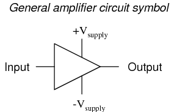
The +V and -V connections denote the positive and negative sides of the DC power supply, respectively. The input and output voltage connections are shown as single conductors, because it is assumed that all signal voltages are referenced to a common connection in the circuit called ground. Often (but not always!), one pole of the DC power supply, either positive or negative, is that ground reference point. A practical amplifier circuit (showing the input voltage source, load resistance, and power supply) might look like this:
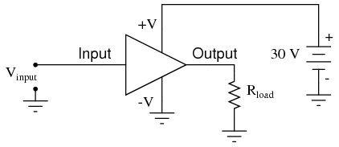
Without having to analyze the actual transistor design of the amplifier, you can readily discern the whole circuit's function: to take an input signal (Vin), amplify it, and drive a load resistance (Rload). To complete the above schematic, it would be good to specify the gains of that amplifier (AV, AI, AP) and the Q (bias) point for any needed mathematical analysis.
If it is necessary for an amplifier to be able to output true AC voltage (reversing polarity) to the load, a split DC power supply may be used, whereby the ground point is electrically "centered" between +V and -V. Sometimes the split power supply configuration is referred to as a dual power supply.
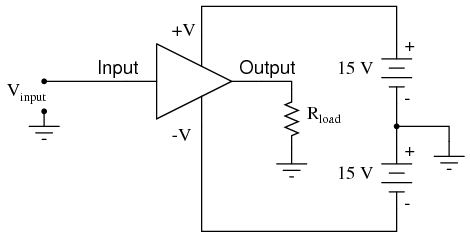
The amplifier is still being supplied with 30 volts overall, but with the split voltage DC power supply, the output voltage across the load resistor can now swing from a theoretical maximum of +15 volts to -15 volts, instead of +30 volts to 0 volts. This is an easy way to get true alternating current (AC) output from an amplifier without resorting to capacitive or inductive (transformer) coupling on the output. The peak-to-peak amplitude of this amplifier's output between cutoff and saturation remains unchanged.
By signifying a transistor amplifier within a larger circuit with a triangle symbol, we ease the task of studying and analyzing more complex amplifiers and circuits. One of these more complex amplifier types that we'll be studying is called the differential amplifier. Unlike normal amplifiers, which amplify a single input signal (often called single-ended amplifiers), differential amplifiers amplify the voltage difference between two input signals. Using the simplified triangle amplifier symbol, a differential amplifier looks like this:
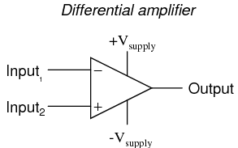
The two input leads can be seen on the left-hand side of the triangular amplifier symbol, the output lead on the right-hand side, and the +V and -V power supply leads on top and bottom. As with the other example, all voltages are referenced to the circuit's ground point. Notice that one input lead is marked with a (-) and the other is marked with a (+). Because a differential amplifier amplifies the difference in voltage between the two inputs, each input influences the output voltage in opposite ways. Consider the following table of input/output voltages for a differential amplifier with a voltage gain of 4:
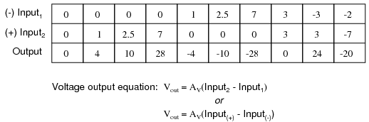
An increasingly positive voltage on the (+) input tends to drive the output voltage more positive, and an increasingly positive voltage on the (-) input tends to drive the output voltage more negative. Likewise, an increasingly negative voltage on the (+) input tends to drive the output negative as well, and an increasingly negative voltage on the (-) input does just the opposite. Because of this relationship between inputs and polarities, the (-) input is commonly referred to as the inverting input and the (+) as the noninverting input.
It may be helpful to think of a differential amplifier as a variable voltage source controlled by a sensitive voltmeter, as such:
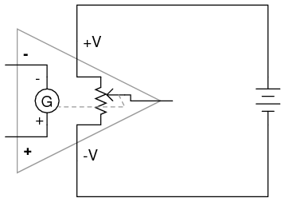
Bear in mind that the above illustration is only a model to aid in understanding the behavior of a differential amplifier. It is not a realistic schematic of its actual design. The "G" symbol represents a galvanometer, a sensitive voltmeter movement. The potentiometer connected between +V and -V provides a variable voltage at the output pin (with reference to one side of the DC power supply), that variable voltage set by the reading of the galvanometer. It must be understood that any load powered by the output of a differential amplifier gets its current from the DC power source (battery), not the input signal. The input signal (to the galvanometer) merely controls the output.
This concept may at first be confusing to students new to amplifiers. With all these polarities and polarity markings (- and +) around, its easy to get confused and not know what the output of a differential amplifier will be. To address this potential confusion, here's a simple rule to remember:
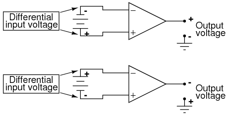
When the polarity of the differential voltage matches the markings for inverting and noninverting inputs, the output will be positive. When the polarity of the differential voltage clashes with the input markings, the output will be negative. This bears some similarity to the mathematical sign displayed by digital voltmeters based on input voltage polarity. The red test lead of the voltmeter (often called the "positive" lead because of the color red's popular association with the positive side of a power supply in electronic wiring) is more positive than the black, the meter will display a positive voltage figure, and vice versa:
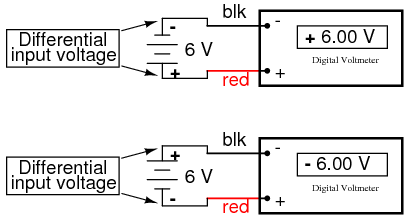
Just as a voltmeter will only display the voltage between its two test leads, an ideal differential amplifier only amplifies the potential difference between its two input connections, not the voltage between any one of those connections and ground. The output polarity of a differential amplifier, just like the signed indication of a digital voltmeter, depends on the relative polarities of the differential voltage between the two input connections.
If the input voltages to this amplifier represented mathematical quantities (as is the case within analog computer circuitry), or physical process measurements (as is the case within analog electronic instrumentation circuitry), you can see how a device such as a differential amplifier could be very useful. We could use it to compare two quantities to see which is greater (by the polarity of the output voltage), or perhaps we could compare the difference between two quantities (such as the level of liquid in two tanks) and flag an alarm (based on the absolute value of the amplifier output) if the difference became too great. In basic automatic control circuitry, the quantity being controlled (called the process variable) is compared with a target value (called the setpoint), and decisions are made as to how to act based on the discrepancy between these two values. The first step in electronically controlling such a scheme is to amplify the difference between the process variable and the setpoint with a differential amplifier. In simple controller designs, the output of this differential amplifier can be directly utilized to drive the final control element (such as a valve) and keep the process reasonably close to setpoint.
Long before the advent of digital electronic technology, computers were built to electronically perform calculations by employing voltages and currents to represent numerical quantities. This was especially useful for the simulation of physical processes. A variable voltage, for instance, might represent velocity or force in a physical system. Through the use of resistive voltage dividers and voltage amplifiers, the mathematical operations of division and multiplication could be easily performed on these signals.
The reactive properties of capacitors and inductors lend themselves well to the simulation of variables related by calculus functions. Remember how the current through a capacitor was a function of the voltage's rate of change, and how that rate of change was designated in calculus as the derivative? Well, if voltage across a capacitor were made to represent the velocity of an object, the current through the capacitor would represent the force required to accelerate or decelerate that object, the capacitor's capacitance representing the object's mass:
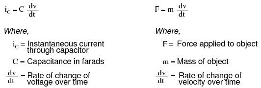
This analog electronic computation of the calculus derivative function is technically known as differentiation, and it is a natural function of a capacitor's current in relation to the voltage applied across it. Note that this circuit requires no "programming" to perform this relatively advanced mathematical function as a digital computer would.
Electronic circuits are very easy and inexpensive to create compared to complex physical systems, so this kind of analog electronic simulation was widely used in the research and development of mechanical systems. For realistic simulation, though, amplifier circuits of high accuracy and easy configurability were needed in these early computers.
It was found in the course of analog computer design that differential amplifiers with extremely high voltage gains met these requirements of accuracy and configurability better than single-ended amplifiers with custom-designed gains. Using simple components connected to the inputs and output of the high-gain differential amplifier, virtually any gain and any function could be obtained from the circuit, overall, without adjusting or modifying the internal circuitry of the amplifier itself. These high-gain differential amplifiers came to be known as operational amplifiers, or op-amps, because of their application in analog computers' mathematical operations.
Modern op-amps, like the popular model 741, are high-performance, inexpensive integrated circuits. Their input impedances are quite high, the inputs drawing currents in the range of half a microamp (maximum) for the 741, and far less for op-amps utilizing field-effect input transistors. Output impedance is typically quite low, about 75 Ω for the model 741, and many models have built-in output short circuit protection, meaning that their outputs can be directly shorted to ground without causing harm to the internal circuitry. With direct coupling between op-amps' internal transistor stages, they can amplify DC signals just as well as AC (up to certain maximum voltage-risetime limits). It would cost far more in money and time to design a comparable discrete-transistor amplifier circuit to match that kind of performance, unless high power capability was required. For these reasons, op-amps have all but obsoleted discrete-transistor signal amplifiers in many applications.
The following diagram shows the pin connections for single op-amps (741 included) when housed in an 8-pin DIP (Dual Inline Package) integrated circuit:
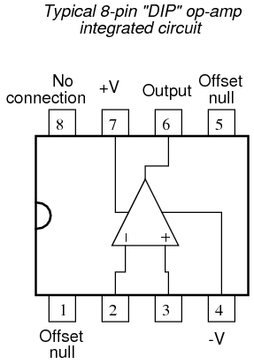
Some models of op-amp come two to a package, including the popular models TL082 and 1458. These are called "dual" units, and are typically housed in an 8-pin DIP package as well, with the following pin connections:
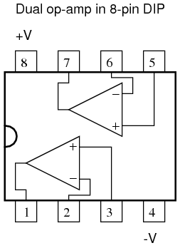
Operational amplifiers are also available four to a package, usually in 14-pin DIP arrangements. Unfortunately, pin assignments aren't as standard for these "quad" op-amps as they are for the "dual" or single units. Consult the manufacturer datasheet(s) for details.
Practical operational amplifier voltage gains are in the range of 200,000 or more, which makes them almost useless as an analog differential amplifier by themselves. For an op-amp with a voltage gain (AV) of 200,000 and a maximum output voltage swing of +15V/-15V, all it would take is a differential input voltage of 75 µV (microvolts) to drive it to saturation or cutoff! Before we take a look at how external components are used to bring the gain down to a reasonable level, let's investigate applications for the "bare" op-amp by itself.
One application is called the comparator. For all practical purposes, we can say that the output of an op-amp will be saturated fully positive if the (+) input is more positive than the (-) input, and saturated fully negative if the (+) input is less positive than the (-) input. In other words, an op-amp's extremely high voltage gain makes it useful as a device to compare two voltages and change output voltage states when one input exceeds the other in magnitude.
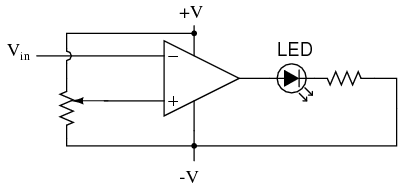
In the above circuit, we have an op-amp connected as a comparator, comparing the input voltage with a reference voltage set by the potentiometer (R1). If Vin drops below the voltage set by R1, the op-amp's output will saturate to +V, thereby lighting up the LED. Otherwise, if Vin is above the reference voltage, the LED will remain off. If Vin is a voltage signal produced by a measuring instrument, this comparator circuit could function as a "low" alarm, with the trip-point set by R1. Instead of an LED, the op-amp output could drive a relay, a transistor, an SCR, or any other device capable of switching power to a load such as a solenoid valve, to take action in the event of a low alarm.
Another application for the comparator circuit shown is a square-wave converter. Suppose that the input voltage applied to the inverting (-) input was an AC sine wave rather than a stable DC voltage. In that case, the output voltage would transition between opposing states of saturation whenever the input voltage was equal to the reference voltage produced by the potentiometer. The result would be a square wave:
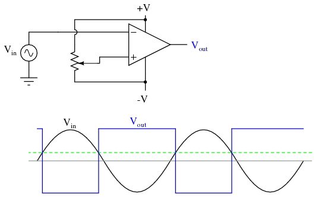
Adjustments to the potentiometer setting would change the reference voltage applied to the noninverting (+) input, which would change the points at which the sine wave would cross, changing the on/off times, or duty cycle of the square wave:
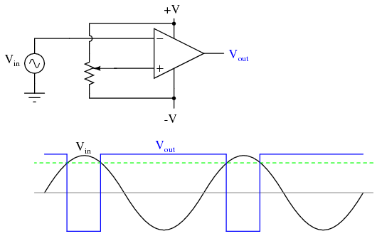
It should be evident that the AC input voltage would not have to be a sine wave in particular for this circuit to perform the same function. The input voltage could be a triangle wave, sawtooth wave, or any other sort of wave that ramped smoothly from positive to negative to positive again. This sort of comparator circuit is very useful for creating square waves of varying duty cycle. This technique is sometimes referred to as pulse-width modulation, or PWM (varying, or modulating a waveform according to a controlling signal, in this case the signal produced by the potentiometer).
Another comparator application is that of the bargraph driver. If we had several op-amps connected as comparators, each with its own reference voltage connected to the inverting input, but each one monitoring the same voltage signal on their noninverting inputs, we could build a bargraph-style meter such as what is commonly seen on the face of stereo tuners and graphic equalizers. As the signal voltage (representing radio signal strength or audio sound level) increased, each comparator would "turn on" in sequence and send power to its respective LED. With each comparator switching "on" at a different level of audio sound, the number of LED's illuminated would indicate how strong the signal was.
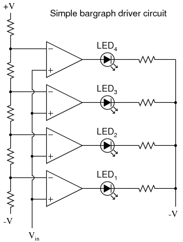
In the circuit shown above, LED1 would be the first to light up as the input voltage increased in a positive direction. As the input voltage continued to increase, the other LED's would illuminate in succession, until all were lit.
This very same technology is used in some analog-to-digital signal converters, namely the flash converter, to translate an analog signal quantity into a series of on/off voltages representing a digital number.
If we connect the output of an op-amp to its inverting input and apply a voltage signal to the noninverting input, we find that the output voltage of the op-amp closely follows that input voltage (I've neglected to draw in the power supply, +V/-V wires, and ground symbol for simplicity):
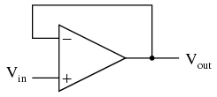
As Vin increases, Vout will increase in accordance with the differential gain. However, as Vout increases, that output voltage is fed back to the inverting input, thereby acting to decrease the voltage differential between inputs, which acts to bring the output down. What will happen for any given voltage input is that the op-amp will output a voltage very nearly equal to Vin, but just low enough so that there's enough voltage difference left between Vin and the (-) input to be amplified to generate the output voltage.
The circuit will quickly reach a point of stability (known as equilibrium in physics), where the output voltage is just the right amount to maintain the right amount of differential, which in turn produces the right amount of output voltage. Taking the op-amp's output voltage and coupling it to the inverting input is a technique known as negative feedback, and it is the key to having a self-stabilizing system (this is true not only of op-amps, but of any dynamic system in general). This stability gives the op-amp the capacity to work in its linear (active) mode, as opposed to merely being saturated fully "on" or "off" as it was when used as a comparator, with no feedback at all.
Because the op-amp's gain is so high, the voltage on the inverting input can be maintained almost equal to Vin. Let's say that our op-amp has a differential voltage gain of 200,000. If Vin equals 6 volts, the output voltage will be 5.999970000149999 volts. This creates just enough differential voltage (6 volts - 5.999970000149999 volts = 29.99985 µV) to cause 5.999970000149999 volts to be manifested at the output terminal, and the system holds there in balance. As you can see, 29.99985 µV is not a lot of differential, so for practical calculations, we can assume that the differential voltage between the two input wires is held by negative feedback exactly at 0 volts.
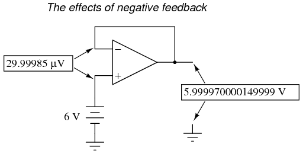
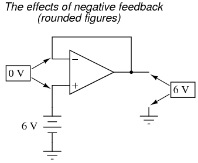
One great advantage to using an op-amp with negative feedback is that the actual voltage gain of the op-amp doesn't matter, so long as its very large. If the op-amp's differential gain were 250,000 instead of 200,000, all it would mean is that the output voltage would hold just a little closer to Vin (less differential voltage needed between inputs to generate the required output). In the circuit just illustrated, the output voltage would still be (for all practical purposes) equal to the non-inverting input voltage. Op-amp gains, therefore, do not have to be precisely set by the factory in order for the circuit designer to build an amplifier circuit with precise gain. Negative feedback makes the system self-correcting. The above circuit as a whole will simply follow the input voltage with a stable gain of 1.
Going back to our differential amplifier model, we can think of the operational amplifier as being a variable voltage source controlled by an extremely sensitive null detector, the kind of meter movement or other sensitive measurement device used in bridge circuits to detect a condition of balance (zero volts). The "potentiometer" inside the op-amp creating the variable voltage will move to whatever position it must to "balance" the inverting and noninverting input voltages so that the "null detector" has zero voltage across it:
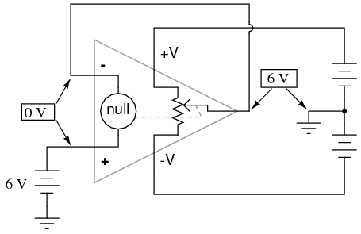
As the "potentiometer" will move to provide an output voltage necessary to satisfy the "null detector" at an "indication" of zero volts, the output voltage becomes equal to the input voltage: in this case, 6 volts. If the input voltage changes at all, the "potentiometer" inside the op-amp will change position to hold the "null detector" in balance (indicating zero volts), resulting in an output voltage approximately equal to the input voltage at all times.
This will hold true within the range of voltages that the op-amp can output. With a power supply of +15V/-15V, and an ideal amplifier that can swing its output voltage just as far, it will faithfully "follow" the input voltage between the limits of +15 volts and -15 volts. For this reason, the above circuit is known as a voltage follower. Like its one-transistor counterpart, the common-collector ("emitter-follower") amplifier, it has a voltage gain of 1, a high input impedance, a low output impedance, and a high current gain. Voltage followers are also known as voltage buffers, and are used to boost the current-sourcing ability of voltage signals too weak (too high of source impedance) to directly drive a load. The op-amp model shown in the last illustration depicts how the output voltage is essentially isolated from the input voltage, so that current on the output pin is not supplied by the input voltage source at all, but rather from the power supply powering the op-amp.
It should be mentioned that many op-amps cannot swing their output voltages exactly to +V/-V power supply rail voltages. The model 741 is one of those that cannot: when saturated, its output voltage peaks within about one volt of the +V power supply voltage and within about 2 volts of the -V power supply voltage. Therefore, with a split power supply of +15/-15 volts, a 741 op-amp's output may go as high as +14 volts or as low as -13 volts (approximately), but no further. This is due to its bipolar transistor design. These two voltage limits are known as the positive saturation voltage and negative saturation voltage, respectively. Other op-amps, such as the model 3130 with field-effect transistors in the final output stage, have the ability to swing their output voltages within millivolts of either power supply rail voltage. Consequently, their positive and negative saturation voltages are practically equal to the supply voltages.
If we add a voltage divider to the negative feedback wiring so that only a fraction of the output voltage is fed back to the inverting input instead of the full amount, the output voltage will be a multiple of the input voltage (please bear in mind that the power supply connections to the op-amp have been omitted once again for simplicity's sake):
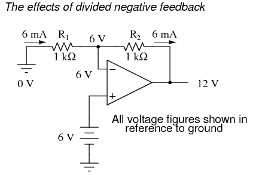
If R1 and R2 are both equal and Vin is 6 volts, the op-amp will output whatever voltage is needed to drop 6 volts across R1 (to make the inverting input voltage equal to 6 volts, as well, keeping the voltage difference between the two inputs equal to zero). With the 2:1 voltage divider of R1 and R2, this will take 12 volts at the output of the op-amp to accomplish.
Another way of analyzing this circuit is to start by calculating the magnitude and direction of current through R1, knowing the voltage on either side (and therefore, by subtraction, the voltage across R1), and R1's resistance. Since the left-hand side of R1 is connected to ground (0 volts) and the right-hand side is at a potential of 6 volts (due to the negative feedback holding that point equal to Vin), we can see that we have 6 volts across R1. This gives us 6 mA of current through R1 from left to right. Because we know that both inputs of the op-amp have extremely high impedance, we can safely assume they won't add or subtract any current through the divider. In other words, we can treat R1 and R2 as being in series with each other: all of the electrons flowing through R1 must flow through R2. Knowing the current through R2 and the resistance of R2, we can calculate the voltage across R2 (6 volts), and its polarity. Counting up voltages from ground (0 volts) to the right-hand side of R2, we arrive at 12 volts on the output.
Upon examining the last illustration, one might wonder, "where does that 6 mA of current go?" The last illustration doesn't show the entire current path, but in reality it comes from the negative side of the DC power supply, through ground, through R1, through R2, through the output pin of the op-amp, and then back to the positive side of the DC power supply through the output transistor(s) of the op-amp. Using the null detector/potentiometer model of the op-amp, the current path looks like this:
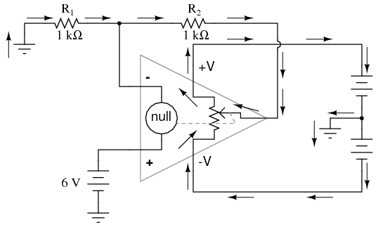
The 6 volt signal source does not have to supply any current for the circuit: it merely commands the op-amp to balance voltage between the inverting (-) and noninverting (+) input pins, and in so doing produce an output voltage that is twice the input due to the dividing effect of the two 1 kΩ resistors.
We can change the voltage gain of this circuit, overall, just by adjusting the values of R1 and R2 (changing the ratio of output voltage that is fed back to the inverting input). Gain can be calculated by the following formula:
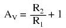
Note that the voltage gain for this design of amplifier circuit can never be less than 1. If we were to lower R2 to a value of zero ohms, our circuit would be essentially identical to the voltage follower, with the output directly connected to the inverting input. Since the voltage follower has a gain of 1, this sets the lower gain limit of the noninverting amplifier. However, the gain can be increased far beyond 1, by increasing R2 in proportion to R1.
Also note that the polarity of the output matches that of the input, just as with a voltage follower. A positive input voltage results in a positive output voltage, and vice versa (with respect to ground). For this reason, this circuit is referred to as a noninverting amplifier.
Just as with the voltage follower, we see that the differential gain of the op-amp is irrelevant, so long as its very high. The voltages and currents in this circuit would hardly change at all if the op-amp's voltage gain were 250,000 instead of 200,000. This stands as a stark contrast to single-transistor amplifier circuit designs, where the Beta of the individual transistor greatly influenced the overall gains of the amplifier. With negative feedback, we have a self-correcting system that amplifies voltage according to the ratios set by the feedback resistors, not the gains internal to the op-amp.
Let's see what happens if we retain negative feedback through a voltage divider, but apply the input voltage at a different location:
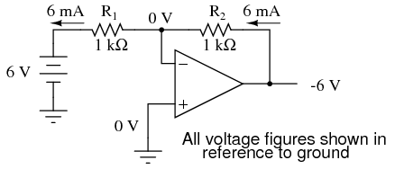
By grounding the noninverting input, the negative feedback from the output seeks to hold the inverting input's voltage at 0 volts, as well. For this reason, the inverting input is referred to in this circuit as a virtual ground, being held at ground potential (0 volts) by the feedback, yet not directly connected to (electrically common with) ground. The input voltage this time is applied to the left-hand end of the voltage divider (R1 = R2 = 1 kΩ again), so the output voltage must swing to -6 volts in order to balance the middle at ground potential (0 volts). Using the same techniques as with the noninverting amplifier, we can analyze this circuit's operation by determining current magnitudes and directions, starting with R1, and continuing on to determining the output voltage.
We can change the overall voltage gain of this circuit, overall, just by adjusting the values of R1 and R2 (changing the ratio of output voltage that is fed back to the inverting input). Gain can be calculated by the following formula:
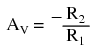
Note that this circuit's voltage gain can be less than 1, depending solely on the ratio of R2 to R1. Also note that the output voltage is always the opposite polarity of the input voltage. A positive input voltage results in a negative output voltage, and vice versa (with respect to ground). For this reason, this circuit is referred to as an inverting amplifier. Sometimes, the gain formula contains a negative sign (before the R2/R1 fraction) to reflect this reversal of polarities.
These two amplifier circuits we've just investigated serve the purpose of multiplying or dividing the magnitude of the input voltage signal. This is exactly how the mathematical operations of multiplication and division are typically handled in analog computer circuitry.